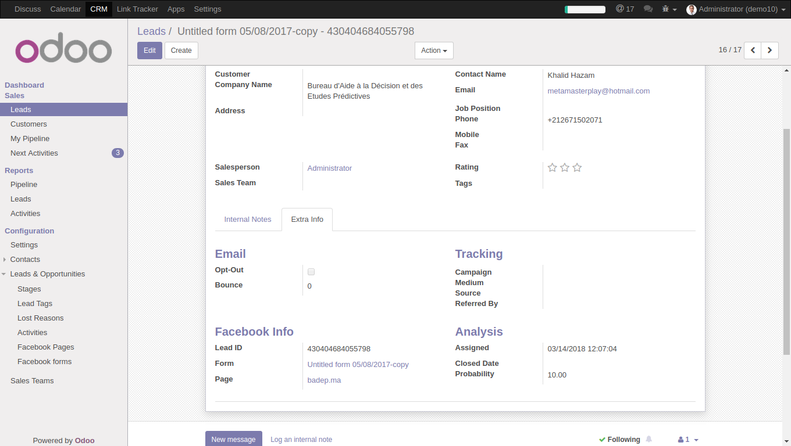

<section class="oe_container">
<div class="oe_spaced">
<h2 class="oe_slogan" style="color: #875a7b;">Sync Facebook Leads with Odoo CRM</h2>
<h3 class="oe_slogan oe_mb32">Support of multiple Pages and multiple Lead Forms with advanced field mapping and automatic teams assignation.</h3>
<h4>Configuration</h4>
<ol>
<li>First you will need a long lived Access Token for your page. You can follow this tutorial here to retrieve one:&nbsp;<a href="https://medium.com/@Jenananthan/how-to-create-non-expiry-facebook-page-token-6505c642d0b1">https://medium.com/@Jenananthan/how-to-create-non-expiry-facebook-page-token-6505c642d0b1</a></li>
<li>Go to "CRM/Configuration/Leads &amp; Opportunities/Facebook Pages" to create your Pages. You will need your Page name, or ID and your Page Access Token. You can use the button "Get Forms" to get all the forms associated with your Facebook page.<br />
<div class="oe_row_img oe_centered oe_mt32"></div>
</li>
<li>For each form you can edit the mapping between Facebook fields and Odoo fields. Any Facebook field which is not mapped will go automatically in the description field of your lead. this way you will get all your lead info even if your Facebook form has fields which does not have an equivalent in Odoo. You can also assign a Salesteam for each form.<br />
<div class="oe_row_img oe_centered oe_mt32"></div>
</li>
</ol>
<h4>Usage</h4>
<p>The cron job which is configured for an interval of 1 hour will automatically get all the leads which are not yet imported in the system.</p>
<div class="oe_row_img oe_centered oe_mt32"></div>
<p>You can also check related Facebook info for each lead.</p>
<div class="oe_row_img oe_centered oe_mt32"></div>
<p>The cron job can also be changed for narrower or bigger intervals.</p>
<div class="oe_row_img oe_centered oe_mt32"></div>
<h4>Roadmap/Known issues</h4>
<ul>
<li>There may be some compatibility issues for some field types. For example if the field type is Many2one the module will automatically search an adequate record by name, which is not always fault-tolerant. Other field types need also to be checked.</li>
<li>The module will always import all the leads which are not in the system. So if you delete a lead it will be reimported the next time. the workaround, which is actually the correct thing to do is to archive (disable) the leads that you won't be using.</li>
<li>Support other Odoo Models (for example partners or mass mailing contacts).</li>
</ul>
</div>
</section>
